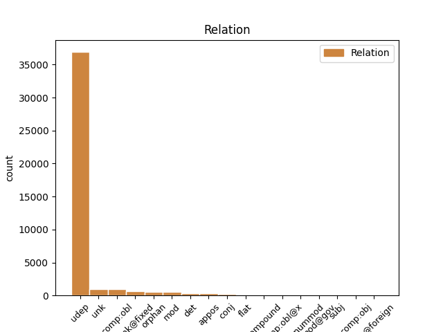
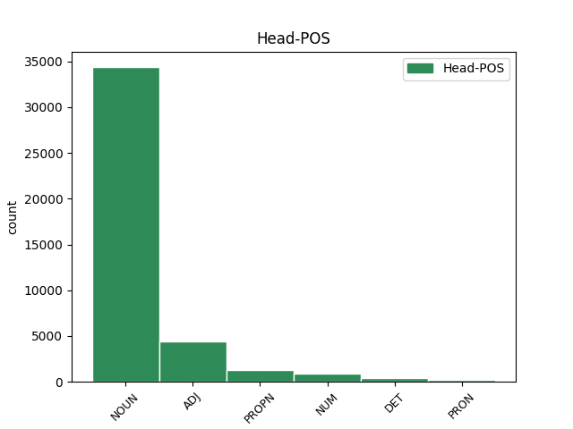
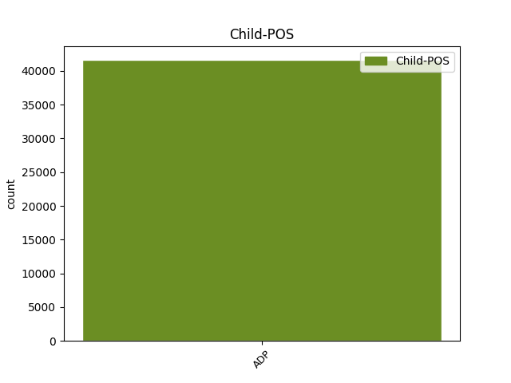

Distribution of features within this leaf



Agreement Rules sorted by frequency.
When the head token is NOUN and the dependent token is ADP.
1 Ve _ _ _ _ 0 _ _ _
2 vzdálenosti _ _ _ _ 0 _ _ _
3 150 _ _ _ _ 0 _ _ _
4 miliónů _ _ _ _ 0 _ _ _
5 km _ _ _ _ 0 _ _ _
6 ( _ _ _ _ 0 _ _ _
7 ekvivalent _ _ _ _ 0 _ _ _
8 vzdálenosti _ _ _ _ 0 _ _ _
9 Slunce _ _ _ _ 0 _ _ _
10 - _ _ _ _ 0 _ _ _
11 Země _ _ _ _ 0 _ _ _
12 ) _ _ _ _ 0 _ _ _
13 stačí _ _ _ _ 0 _ _ _
14 na _ _ _ _ 0 _ _ _
15 udělení _ _ _ _ 0 _ _ _
16 postačující _ _ _ _ 0 _ _ _
17 příčné _ _ _ _ 0 _ _ _
18 složky _ _ _ _ 0 _ _ _
19 rychlosti _ _ _ _ 0 _ _ _
20 asi _ _ _ _ 0 _ _ _
21 1 _ _ _ _ 0 _ _ _
22 Mt _ _ _ _ 0 _ _ _
23 TNT _ _ _ _ 0 _ _ _
24 , _ _ _ _ 0 _ _ _
25 ale _ _ _ _ 0 _ _ _
26 k _ _ _ _ 0 _ _ _
27 tomu _ _ _ _ 0 _ _ _
28 je _ _ _ _ 0 _ _ _
29 třeba _ _ _ _ 0 _ _ _
30 připočítat _ _ _ _ 0 _ _ _
31 další _ _ _ _ 0 _ _ _
32 nemalou _ _ _ _ 0 _ _ _
33 energii _ _ _ _ 0 _ _ _
34 potřebnou _ _ _ _ 0 _ _ _
35 pro _ _ _ _ 0 _ _ _
36 rozbití rozbití NOUN NNNS4-----A---- Case=Acc|Gender=Neut|Number=Sing|Polarity=Pos 0 _ _ _
37 planetky _ _ _ _ 0 _ _ _
38 či _ _ _ _ 0 _ _ _
39 jádra _ _ _ _ 0 _ _ _
40 komety _ _ _ _ 0 _ _ _
41 na na ADP RR--4---------- AdpType=Prep|Case=Acc 36 udep _ LId=na-1
42 dva _ _ _ _ 0 _ _ _
43 kusy _ _ _ _ 0 _ _ _
44 . _ _ _ _ 0 _ _ _
When the head token is ADJ and the dependent token is ADP.
1 Ve _ _ _ _ 0 _ _ _
2 vzdálenosti _ _ _ _ 0 _ _ _
3 150 _ _ _ _ 0 _ _ _
4 miliónů _ _ _ _ 0 _ _ _
5 km _ _ _ _ 0 _ _ _
6 ( _ _ _ _ 0 _ _ _
7 ekvivalent _ _ _ _ 0 _ _ _
8 vzdálenosti _ _ _ _ 0 _ _ _
9 Slunce _ _ _ _ 0 _ _ _
10 - _ _ _ _ 0 _ _ _
11 Země _ _ _ _ 0 _ _ _
12 ) _ _ _ _ 0 _ _ _
13 stačí _ _ _ _ 0 _ _ _
14 na _ _ _ _ 0 _ _ _
15 udělení _ _ _ _ 0 _ _ _
16 postačující _ _ _ _ 0 _ _ _
17 příčné _ _ _ _ 0 _ _ _
18 složky _ _ _ _ 0 _ _ _
19 rychlosti _ _ _ _ 0 _ _ _
20 asi _ _ _ _ 0 _ _ _
21 1 _ _ _ _ 0 _ _ _
22 Mt _ _ _ _ 0 _ _ _
23 TNT _ _ _ _ 0 _ _ _
24 , _ _ _ _ 0 _ _ _
25 ale _ _ _ _ 0 _ _ _
26 k _ _ _ _ 0 _ _ _
27 tomu _ _ _ _ 0 _ _ _
28 je _ _ _ _ 0 _ _ _
29 třeba _ _ _ _ 0 _ _ _
30 připočítat _ _ _ _ 0 _ _ _
31 další _ _ _ _ 0 _ _ _
32 nemalou _ _ _ _ 0 _ _ _
33 energii _ _ _ _ 0 _ _ _
34 potřebnou potřebný ADJ AAFS4----1A---- Case=Acc|Degree=Pos|Gender=Fem|Number=Sing|Polarity=Pos 0 _ _ _
35 pro pro ADP RR--4---------- AdpType=Prep|Case=Acc 34 udep _ LId=pro-1
36 rozbití _ _ _ _ 0 _ _ _
37 planetky _ _ _ _ 0 _ _ _
38 či _ _ _ _ 0 _ _ _
39 jádra _ _ _ _ 0 _ _ _
40 komety _ _ _ _ 0 _ _ _
41 na _ _ _ _ 0 _ _ _
42 dva _ _ _ _ 0 _ _ _
43 kusy _ _ _ _ 0 _ _ _
44 . _ _ _ _ 0 _ _ _
When the head token is PROPN and the dependent token is ADP.
1 Mezi _ _ _ _ 0 _ _ _
2 nejúspěšnější _ _ _ _ 0 _ _ _
3 zařízení _ _ _ _ 0 _ _ _
4 tohoto _ _ _ _ 0 _ _ _
5 druhu _ _ _ _ 0 _ _ _
6 patří _ _ _ _ 0 _ _ _
7 Maksutova _ _ _ _ 0 _ _ _
8 komora _ _ _ _ 0 _ _ _
9 na _ _ _ _ 0 _ _ _
10 Kleti Kleť PROPN NNFS6-----A---- Case=Loc|Gender=Fem|NameType=Geo|Number=Sing|Polarity=Pos 0 _ _ _
11 v v ADP RR--6---------- AdpType=Prep|Case=Loc 10 udep _ LId=v-1
12 jižních _ _ _ _ 0 _ _ _
13 Čechách _ _ _ _ 0 _ _ _
14 , _ _ _ _ 0 _ _ _
15 kde _ _ _ _ 0 _ _ _
16 bylo _ _ _ _ 0 _ _ _
17 v _ _ _ _ 0 _ _ _
18 uplynulých _ _ _ _ 0 _ _ _
19 desetiletích _ _ _ _ 0 _ _ _
20 zejména _ _ _ _ 0 _ _ _
21 zásluhou _ _ _ _ 0 _ _ _
22 A _ _ _ _ 0 _ _ _
23 . _ _ _ _ 0 _ _ _
24 Mrkose _ _ _ _ 0 _ _ _
25 objeveno _ _ _ _ 0 _ _ _
26 několik _ _ _ _ 0 _ _ _
27 set _ _ _ _ 0 _ _ _
28 planetek _ _ _ _ 0 _ _ _
29 a _ _ _ _ 0 _ _ _
30 také _ _ _ _ 0 _ _ _
31 několik _ _ _ _ 0 _ _ _
32 komet _ _ _ _ 0 _ _ _
33 . _ _ _ _ 0 _ _ _
When the head token is NUM and the dependent token is ADP.
1 Při _ _ _ _ 0 _ _ _
2 podobném _ _ _ _ 0 _ _ _
3 studiu _ _ _ _ 0 _ _ _
4 si _ _ _ _ 0 _ _ _
5 toho _ _ _ _ 0 _ _ _
6 všiml _ _ _ _ 0 _ _ _
7 již _ _ _ _ 0 _ _ _
8 H _ _ _ _ 0 _ _ _
9 . _ _ _ _ 0 _ _ _
10 Sienkiewicz _ _ _ _ 0 _ _ _
11 , _ _ _ _ 0 _ _ _
12 který _ _ _ _ 0 _ _ _
13 ústy _ _ _ _ 0 _ _ _
14 jednoho jeden NUM ClZS2---------- Case=Gen|Gender=Masc,Neut|Number=Sing|NumForm=Word|NumType=Card|NumValue=1,2,3 0 _ _ _
15 ze z ADP RV--2---------- AdpType=Voc|Case=Gen 14 udep _ LId=z-1
16 svých _ _ _ _ 0 _ _ _
17 hrdinů _ _ _ _ 0 _ _ _
18 ( _ _ _ _ 0 _ _ _
19 Křižáci _ _ _ _ 0 _ _ _
20 ) _ _ _ _ 0 _ _ _
21 při _ _ _ _ 0 _ _ _
22 výčtu _ _ _ _ 0 _ _ _
23 předností _ _ _ _ 0 _ _ _
24 rytířů _ _ _ _ 0 _ _ _
25 jednotlivých _ _ _ _ 0 _ _ _
26 křesťanských _ _ _ _ 0 _ _ _
27 národů _ _ _ _ 0 _ _ _
28 říká _ _ _ _ 0 _ _ _
29 : _ _ _ _ 0 _ _ _
30 " _ _ _ _ 0 _ _ _
31 . _ _ _ _ 0 _ _ _
32 . _ _ _ _ 0 _ _ _
33 . _ _ _ _ 0 _ _ _
When the head token is DET and the dependent token is ADP.
1 Svůj svůj DET P8YS1---------- Case=Nom|Gender=Masc|Number=Sing|Poss=Yes|PronType=Prs|Reflex=Yes 0 _ _ _
2 versus versus ADP RR--1---------- AdpType=Prep|Case=Nom|Foreign=Yes 1 unk _ _
3 jeho _ _ _ _ 0 _ _ _
4 , _ _ _ _ 0 _ _ _
5 její _ _ _ _ 0 _ _ _
6 , _ _ _ _ 0 _ _ _
7 jejich _ _ _ _ 0 _ _ _
8 57 _ _ _ _ 0 _ _ _
When the head token is PRON and the dependent token is ADP.
1 Kvantová _ _ _ _ 0 _ _ _
2 teorie _ _ _ _ 0 _ _ _
3 ukazuje _ _ _ _ 0 _ _ _
4 vakuum _ _ _ _ 0 _ _ _
5 jako _ _ _ _ 0 _ _ _
6 neobyčejnou _ _ _ _ 0 _ _ _
7 , _ _ _ _ 0 _ _ _
8 dynamickou _ _ _ _ 0 _ _ _
9 , _ _ _ _ 0 _ _ _
10 neustále _ _ _ _ 0 _ _ _
11 se _ _ _ _ 0 _ _ _
12 měnící _ _ _ _ 0 _ _ _
13 substanci _ _ _ _ 0 _ _ _
14 , _ _ _ _ 0 _ _ _
15 jako _ _ _ _ 0 _ _ _
16 něco něco PRON PZ--4---------- Case=Acc|PronType=Ind 0 _ _ _
17 na na ADP RR--4---------- AdpType=Prep|Case=Acc 16 udep _ LId=na-1
18 způsob _ _ _ _ 0 _ _ _
19 kypící _ _ _ _ 0 _ _ _
20 kapaliny _ _ _ _ 0 _ _ _
21 z _ _ _ _ 0 _ _ _
22 virtuálních _ _ _ _ 0 _ _ _
23 - _ _ _ _ 0 _ _ _
24 rodících _ _ _ _ 0 _ _ _
25 se _ _ _ _ 0 _ _ _
26 a _ _ _ _ 0 _ _ _
27 hned _ _ _ _ 0 _ _ _
28 zase _ _ _ _ 0 _ _ _
29 zanikajících _ _ _ _ 0 _ _ _
30 - _ _ _ _ 0 _ _ _
31 elementárních _ _ _ _ 0 _ _ _
32 částic _ _ _ _ 0 _ _ _
33 . _ _ _ _ 0 _ _ _
Disagree Examples:
1 Hlasité _ _ _ _ 0 _ _ _
2 přečtení _ _ _ _ 0 _ _ _
3 dobře _ _ _ _ 0 _ _ _
4 čitelného _ _ _ _ 0 _ _ _
5 textu text NOUN NNIS2-----A---- Animacy=Inan|Case=Gen|Gender=Masc|Number=Sing|Polarity=Pos 0 _ _ _
6 na na ADP RR--6---------- AdpType=Prep|Case=Loc 5 udep _ LId=na-1
7 stránce _ _ _ _ 0 _ _ _
8 A _ _ _ _ 0 _ _ _
9 4 _ _ _ _ 0 _ _ _
10 , _ _ _ _ 0 _ _ _
11 při _ _ _ _ 0 _ _ _
12 řádkování _ _ _ _ 0 _ _ _
13 1.5 _ _ _ _ 0 _ _ _
14 , _ _ _ _ 0 _ _ _
15 trvá _ _ _ _ 0 _ _ _
16 zhruba _ _ _ _ 0 _ _ _
17 3 _ _ _ _ 0 _ _ _
18 minuty _ _ _ _ 0 _ _ _
19 . _ _ _ _ 0 _ _ _
1 Hlasité _ _ _ _ 0 _ _ _
2 přečtení _ _ _ _ 0 _ _ _
3 dobře _ _ _ _ 0 _ _ _
4 čitelného _ _ _ _ 0 _ _ _
5 textu text NOUN NNIS2-----A---- Animacy=Inan|Case=Gen|Gender=Masc|Number=Sing|Polarity=Pos 0 _ _ _
6 na _ _ _ _ 0 _ _ _
7 stránce _ _ _ _ 0 _ _ _
8 A _ _ _ _ 0 _ _ _
9 4 _ _ _ _ 0 _ _ _
10 , _ _ _ _ 0 _ _ _
11 při při ADP RR--6---------- AdpType=Prep|Case=Loc 5 udep _ LId=při-1
12 řádkování _ _ _ _ 0 _ _ _
13 1.5 _ _ _ _ 0 _ _ _
14 , _ _ _ _ 0 _ _ _
15 trvá _ _ _ _ 0 _ _ _
16 zhruba _ _ _ _ 0 _ _ _
17 3 _ _ _ _ 0 _ _ _
18 minuty _ _ _ _ 0 _ _ _
19 . _ _ _ _ 0 _ _ _
1 Přenosová _ _ _ _ 0 _ _ _
2 rychlost _ _ _ _ 0 _ _ _
3 přístroje přístroj NOUN NNIS2-----A---- Animacy=Inan|Case=Gen|Gender=Masc|Number=Sing|Polarity=Pos 0 _ _ _
4 pro pro ADP RR--4---------- AdpType=Prep|Case=Acc 3 udep _ LId=pro-1
5 telefonní _ _ _ _ 0 _ _ _
6 faksimile _ _ _ _ 0 _ _ _
7 , _ _ _ _ 0 _ _ _
8 tak _ _ _ _ 0 _ _ _
9 se _ _ _ _ 0 _ _ _
10 správně _ _ _ _ 0 _ _ _
11 nazývá _ _ _ _ 0 _ _ _
12 zařízení _ _ _ _ 0 _ _ _
13 , _ _ _ _ 0 _ _ _
14 o _ _ _ _ 0 _ _ _
15 kterém _ _ _ _ 0 _ _ _
16 dnes _ _ _ _ 0 _ _ _
17 píšeme _ _ _ _ 0 _ _ _
18 , _ _ _ _ 0 _ _ _
19 je _ _ _ _ 0 _ _ _
20 sice _ _ _ _ 0 _ _ _
21 zajímavý _ _ _ _ 0 _ _ _
22 parametr _ _ _ _ 0 _ _ _
23 pro _ _ _ _ 0 _ _ _
24 posouzení _ _ _ _ 0 _ _ _
25 jeho _ _ _ _ 0 _ _ _
26 vlastností _ _ _ _ 0 _ _ _
27 , _ _ _ _ 0 _ _ _
28 ale _ _ _ _ 0 _ _ _
29 má _ _ _ _ 0 _ _ _
30 z _ _ _ _ 0 _ _ _
31 uživatelského _ _ _ _ 0 _ _ _
32 hlediska _ _ _ _ 0 _ _ _
33 omezený _ _ _ _ 0 _ _ _
34 význam _ _ _ _ 0 _ _ _
35 . _ _ _ _ 0 _ _ _
1 Přenosová _ _ _ _ 0 _ _ _
2 rychlost _ _ _ _ 0 _ _ _
3 přístroje _ _ _ _ 0 _ _ _
4 pro _ _ _ _ 0 _ _ _
5 telefonní _ _ _ _ 0 _ _ _
6 faksimile _ _ _ _ 0 _ _ _
7 , _ _ _ _ 0 _ _ _
8 tak _ _ _ _ 0 _ _ _
9 se _ _ _ _ 0 _ _ _
10 správně _ _ _ _ 0 _ _ _
11 nazývá _ _ _ _ 0 _ _ _
12 zařízení _ _ _ _ 0 _ _ _
13 , _ _ _ _ 0 _ _ _
14 o _ _ _ _ 0 _ _ _
15 kterém _ _ _ _ 0 _ _ _
16 dnes _ _ _ _ 0 _ _ _
17 píšeme _ _ _ _ 0 _ _ _
18 , _ _ _ _ 0 _ _ _
19 je _ _ _ _ 0 _ _ _
20 sice _ _ _ _ 0 _ _ _
21 zajímavý _ _ _ _ 0 _ _ _
22 parametr parametr NOUN NNIS1-----A---- Animacy=Inan|Case=Nom|Gender=Masc|Number=Sing|Polarity=Pos 0 _ _ _
23 pro pro ADP RR--4---------- AdpType=Prep|Case=Acc 22 udep _ LId=pro-1
24 posouzení _ _ _ _ 0 _ _ _
25 jeho _ _ _ _ 0 _ _ _
26 vlastností _ _ _ _ 0 _ _ _
27 , _ _ _ _ 0 _ _ _
28 ale _ _ _ _ 0 _ _ _
29 má _ _ _ _ 0 _ _ _
30 z _ _ _ _ 0 _ _ _
31 uživatelského _ _ _ _ 0 _ _ _
32 hlediska _ _ _ _ 0 _ _ _
33 omezený _ _ _ _ 0 _ _ _
34 význam _ _ _ _ 0 _ _ _
35 . _ _ _ _ 0 _ _ _
1 Protože _ _ _ _ 0 _ _ _
2 smyslem _ _ _ _ 0 _ _ _
3 článku _ _ _ _ 0 _ _ _
4 je _ _ _ _ 0 _ _ _
5 napomoci _ _ _ _ 0 _ _ _
6 orientovat _ _ _ _ 0 _ _ _
7 se _ _ _ _ 0 _ _ _
8 vám _ _ _ _ 0 _ _ _
9 při _ _ _ _ 0 _ _ _
10 výběru _ _ _ _ 0 _ _ _
11 zařízení zařízení NOUN NNNS2-----A---- Case=Gen|Gender=Neut|Number=Sing|Polarity=Pos 0 _ _ _
12 pro pro ADP RR--4---------- AdpType=Prep|Case=Acc 11 udep _ LId=pro-1
13 vaši _ _ _ _ 0 _ _ _
14 potřebu _ _ _ _ 0 _ _ _
15 , _ _ _ _ 0 _ _ _
16 je _ _ _ _ 0 _ _ _
17 nutné _ _ _ _ 0 _ _ _
18 poněkud _ _ _ _ 0 _ _ _
19 obšírněji _ _ _ _ 0 _ _ _
20 vysvětlit _ _ _ _ 0 _ _ _
21 , _ _ _ _ 0 _ _ _
22 proč _ _ _ _ 0 _ _ _
23 je _ _ _ _ 0 _ _ _
24 nutné _ _ _ _ 0 _ _ _
25 tento _ _ _ _ 0 _ _ _
26 parametr _ _ _ _ 0 _ _ _
27 , _ _ _ _ 0 _ _ _
28 uváděný _ _ _ _ 0 _ _ _
29 v _ _ _ _ 0 _ _ _
30 prospektech _ _ _ _ 0 _ _ _
31 , _ _ _ _ 0 _ _ _
32 brát _ _ _ _ 0 _ _ _
33 jen _ _ _ _ 0 _ _ _
34 jako _ _ _ _ 0 _ _ _
35 orientační _ _ _ _ 0 _ _ _
36 údaj _ _ _ _ 0 _ _ _
37 . _ _ _ _ 0 _ _ _